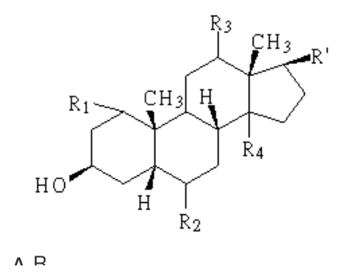
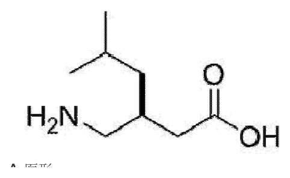
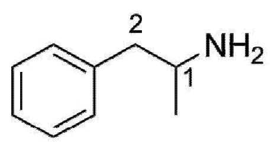

開卷有益 ／
藥師 ／ 藥理學與藥物化學 ／ 107 年第 2 次107 年第 2 次藥師藥理學與藥物化學試題與答案
這一頁是民國 107 年第 2 次藥師藥理學與藥物化學的整份歷屆試題，共 80 題，題目與標準答案出自考選部「國家考試試題及測驗式試題答案」開放資料，其中 74 題附有詳解。以下逐題列出題幹、選項與答案；要計時作答或記錄成績，請用線上練習。
考選部原始場次代碼：107100
線上作答這一科 →
全部 80 題
第 1 題
下列藥物在血中，何者主要會與α1-acid glycoprotein結合？
（A） amphotericin B（B） barbiturates（C） prazosin（D） tetracycline答案：（C）
詳解與考點 正解：血漿中的 α1-acid glycoprotein 主要結合鹼性藥物。（C）prazosin 具有鹼性結構特性，符合與 α1-acid glycoprotein 結合的典型配對；分辨時先以藥物酸鹼性決定優先聯想的血漿蛋白，故選 C。
A：amphotericin B 的血中結合以脂蛋白等為重要考量，並非 α1-acid glycoprotein 結合的典型鹼性藥物例子。
B：barbiturates 多屬弱酸性藥物，較應聯想到 albumin 結合，而不是 α1-acid glycoprotein。
D：tetracycline 不屬本題要找的典型鹼性 α1-acid glycoprotein 結合藥物；不能只因其可與蛋白結合便選入。
本題考點：α1-acid glycoprotein 結合（alpha-1-acid glycoprotein binding）——遇到鹼性藥物時，優先考慮此蛋白；albumin 結合（albumin binding）——弱酸性藥物通常較常與 albumin 結合，與前者形成基本配對。
第 2 題
下列有關gene transfer所用之Adenovirus載體（vector）之敘述，何者錯誤？
（A） 相較於Retrovirus vector，Adenovirus vector有較久之DNA表現（expression）作用（B） 優點為高效率之DNA transfer（C） 可轉殖到不分裂之細胞（D） 容易產生免疫反應答案：（A）
詳解與考點 正解：比較 Adenovirus vector 與 Retrovirus vector 時，關鍵在病毒載體是否整合入宿主基因組。（A）說 Adenovirus vector 比 Retrovirus vector 有較久的 DNA expression，方向相反；Adenovirus vector 通常不整合而多為暫時表現，故選 A。
B：Adenovirus vector 的 DNA transfer 效率高，是其常見優點之一。
C：Adenovirus vector 可轉殖不分裂細胞；這是其相較於需要細胞分裂進行基因組整合之舊型 Retrovirus vector 的重要差異。
D：Adenovirus vector 容易引發免疫反應，雖限制重複給藥與長期表現，卻是正確敘述。
本題考點：腺病毒載體（Adenovirus vector）——要同時記住高轉殖效率、可感染不分裂細胞與較強免疫反應；逆轉錄病毒載體（Retrovirus vector）——比較表現持久性時，先看是否整合進宿主基因組。
第 3 題
NH4Cl可以加速下列各藥物之腎臟清除率，惟何者除外？
（A） Phenobarbital（B） Amphetamine（C） Mecamylamine（D） Quinine答案：（A）
詳解與考點 正解：NH4Cl 使尿液酸化，會增加弱鹼性藥物在尿中的離子化與排出。（A）Phenobarbital 為弱酸性藥物，尿液酸化反而不利其離子化排出；要增加其腎臟清除率應朝尿液鹼化的方向思考，因此是例外，故選 A。
B：Amphetamine 是弱鹼性藥物，尿液酸化後較多形成帶電型態，腎小管再吸收減少，清除率上升。
C：Mecamylamine 同屬可受尿液酸化影響排出的弱鹼性藥物，NH4Cl 會促進其離子捕捉與排泄。
D：Quinine 為弱鹼性藥物，酸化尿液可提高離子化比例並降低再吸收，因此腎臟清除率增加。
本題考點：離子捕捉（ion trapping）——藥物在尿液中帶電時較不易被再吸收，排泄增加；尿液酸鹼化（urinary pH manipulation）——酸化尿液加速弱鹼排出，鹼化尿液加速弱酸排出。
第 4 題
下列何項因素不會降低服用藥物在血漿之濃度？
（A） 代謝性轉化（B） 腎小管再吸收（C） 血漿蛋白之結合（D） 腎小管主動分泌答案：（B）
詳解與考點 正解：判準是該過程使藥物離開血液，還是把已濾出的藥物送回血液。（B）腎小管再吸收會把藥物由腎小管腔回到循環，降低的是排泄而非血漿濃度，所以不會造成題述的降低，故選 B。
A：代謝性轉化將原藥轉為代謝物，是降低原藥血漿濃度的主要消除途徑之一。
C：血漿蛋白結合會降低游離藥物濃度並影響分布；本題以可用藥物濃度的方向判斷時，屬會使游離濃度下降的因素。
D：腎小管主動分泌把藥物由血液送入腎小管腔，增加排泄，因此會降低血中藥物量。
本題考點：腎小管再吸收（renal tubular reabsorption）——藥物由尿液側返回血液時，清除率下降而非上升；游離藥物濃度（free drug concentration）——判讀蛋白結合時要區分游離濃度與總血漿濃度，藥效與可分布部分主要看前者。
第 5 題
藥物在人體內之氧化反應，通常與下列何種因子無關？
（A） Esterase（B） Cytochrome P450 protein（C） NADH or NADPH cofactors（D） O2答案：（A）
詳解與考點 正解：藥物氧化反應的典型系統是 Cytochrome P450、氧氣與還原型輔因子共同參與。（A）esterase 主要催化酯鍵水解，屬水解反應而非通常的氧化反應成分，故選 A。
B：Cytochrome P450 protein 是藥物氧化代謝最重要的酵素系統之一，直接參與電子轉移與受質氧化。
C：NADH 或 NADPH cofactors 提供還原當量，協助氧化酵素系統完成電子傳遞，因此與氧化反應相關。
D：O2 是許多藥物氧化反應的氧來源與受電子者，缺少氧氣便不能完成典型的單加氧反應。
本題考點：藥物氧化（drug oxidation）——看到 Cytochrome P450、NADPH 與 O2 時，聯想到氧化代謝；酯酶水解（esterase hydrolysis）——含酯鍵藥物若由 esterase 作用，判斷為水解而非氧化。
第 6 題
下列那一組抗生素併用可產生抑菌協同作用的原因是：(a)藥物可以減少(b)藥物被細菌所產生的酵素破壞？
（A） (a) Sulbactam；(b) Ampicillin（B） (a) Ticarcillin；(b) Kanamycin（C） (a) Imipenem；(b) Cilastatin（D） (a) Amphotericin B；(b) Flucytocine答案：（A）
詳解與考點 正解：關鍵在（A）Sulbactam 會抑制細菌產生的 β-lactamase，保護 Ampicillin 的 β-lactam 環不被水解，使 ampicillin 得以持續抑制細胞壁合成；這正符合（a）減少（b）被細菌酵素破壞的協同作用，故選 A。
B：（B）Ticarcillin 與 Kanamycin 的協同來自 β-lactam 破壞細胞壁後增加 aminoglycoside 進入細菌，並非 ticarcillin 抑制分解 kanamycin 的細菌酵素。
C：（C）Cilastatin 抑制的是人體腎臟的 dehydropeptidase I，以減少 imipenem 在腎臟被分解；作用位置不是細菌產生的酵素。
D：（D）Amphotericin B 造成真菌細胞膜通透性增加，可促進 flucytosine 進入真菌細胞；其協同機轉不是保護另一藥物免於細菌酵素破壞。
本題考點：β-lactamase inhibitor——看到 sulbactam 時，判斷它是否在保護併用 β-lactam 抗生素免受細菌酵素水解；β-lactam 與 aminoglycoside 協同（β-lactam–aminoglycoside synergy）——細胞壁受損增加 aminoglycoside 進入細菌，與酵素抑制型協同要分開判斷。
第 7 題
有關Aminoglycosides類抗生素之敘述，下列何者正確？
（A） 若和利尿劑Furosemide併用時可能加重其腎毒性（B） 主要以口服方式給藥治療全身性感染（C） 可以和Ticarcillin合併用於治療綠膿桿菌之感染（D） 主要由肝臟代謝使其失去藥效本題送分，無標準答案
詳解與考點 本題經考選部公告一律給分。(A)Aminoglycosides與Furosemide併用，兩者皆具耳毒性與腎毒性加成作用，教材多強調耳毒性但腎毒性加重亦有文獻支持，故(A)可判為正確；(C)Aminoglycosides（如Gentamicin）與Ticarcillin併用治療綠膿桿菌感染為臨床常見協同療法，亦屬正確敘述，二者同時成立造成擇一困難。(B)Aminoglycosides口服幾乎不吸收，僅用於腸道去污而非全身感染；(D)其主要以腎臟原型排除而非經肝代謝失效，皆明顯錯誤可排除。作答以現行藥理學教材為準。
第 8 題
下列化學治療藥物，何者抑制骨髓的副作用最小？
（A） Idarubicin（B） Paclitaxel（C） Vincristine（D） Bleomycin答案：（D）
詳解與考點 正解：（D）Bleomycin 的劑量限制毒性以肺毒性與皮膚反應為主，骨髓抑制通常極少；在四個選項中最符合骨髓抑制最小的判準，故選 D。
A：（A）Idarubicin 為 anthracycline，會抑制快速分裂的骨髓細胞，骨髓抑制是重要毒性之一。
B：（B）Paclitaxel 的常見劑量限制毒性包括中性白血球減少，不能列為骨髓抑制最小。
C：（C）Vincristine 的主要劑量限制毒性確為周邊神經病變，骨髓抑制也較輕；但（D）Bleomycin 的特徵性骨髓毒性更不突出。
本題考點：抗腫瘤藥物毒性辨識（antineoplastic toxicity profiles）——比較副作用時先抓各藥最具代表性的劑量限制毒性；Bleomycin 毒性（bleomycin toxicity）——肺毒性與皮膚反應突出、骨髓抑制少，是與多數細胞毒性藥物區分的線索。
第 9 題
下列Sulfonamides中，何者最適合局部使用於燒燙傷傷口以預防燒燙傷病人之感染？
（A） Sulfisoxazole（B） Silver sulfadiazine（C） Sulfamethoxazole（D） Sulfacetamide答案：（B）
詳解與考點 正解：燒燙傷創面需要可局部使用、能預防常見創面病原感染的 sulfonamide；（B）Silver sulfadiazine 以局部製劑覆用於燒燙傷傷口，是經典的預防感染用藥，故選 B。
A：（A）Sulfisoxazole 的用途偏向泌尿道感染，仰賴尿中濃度，並非燒燙傷創面的標準局部製劑。
C：（C）Sulfamethoxazole 常與 trimethoprim 合併作全身性抗菌治療，不能取代燒燙傷傷口的局部預防。
D：（D）Sulfacetamide 常見於眼科局部製劑，適用部位與燒燙傷創面不同。
本題考點：Silver sulfadiazine 局部用途——遇到燒燙傷感染預防時，先找可直接覆用於創面的含銀 sulfonamide；sulfonamide 劑型選擇（sulfonamide dosage-form selection）——同類藥要依局部部位、尿路濃度或全身治療目的分辨，不能只看藥物類別。
第 10 題
有關孕婦避免使用抗生素之敘述，下列何者正確？
（A） Sulfonamides可能使glucose-6-phosphate dehydrogenase（G6PD）缺乏之新生兒發生溶血現象（B） Tetracyclines可能造成胎兒第八對腦神經受損而影響聽力（C） Chloramphenicol會抑制胎兒骨頭生長（D） Aminoglycosides會造成灰嬰症候群（gray baby syndrome）答案：（A）
詳解與考點 正解：孕期用藥的判準要連同胎兒與新生兒的脆弱性評估；（A）Sulfonamides 可在 glucose-6-phosphate dehydrogenase（G6PD）缺乏的新生兒引發氧化性溶血，敘述正確，故選 A。
B：（B）Tetracyclines 的典型胎兒毒性是牙齒著色與骨骼生長受影響；第八對腦神經相關的聽力傷害較屬 aminoglycosides 的風險。
C：（C）Chloramphenicol 的新生兒重要風險是 gray baby syndrome，胎兒骨頭生長受抑則是 tetracyclines 的典型問題。
D：（D）Aminoglycosides 可造成耳毒性與腎毒性，gray baby syndrome 是 chloramphenicol 因新生兒代謝能力未成熟所致。
本題考點：孕期抗生素毒性（antibiotic toxicity in pregnancy）——把牙骨、聽覺、溶血與新生兒代謝四類風險分別配回相應藥類；G6PD 缺乏與氧化性溶血（oxidative hemolysis）——遇到具氧化壓力的藥物時，先判斷是否可能使 G6PD 缺乏者溶血。
第 11 題
下列何種藥物不適用於治療Legionella pneumonia之感染？
（A） Erythromycin（B） Rifampin（C） Gentamicin（D） Ciprofloxacin答案：（C）
詳解與考點 正解：Legionella 為胞內寄生傾向的非典型病原，治療需選細胞內濃度足夠的抗菌藥；（C）Gentamicin 細胞內穿透有限，不適合用於 Legionella pneumonia，故選 C。
A：（A）Erythromycin 為 macrolide，可在細胞內達到作用濃度，是 Legionella 的傳統治療選項。
B：（B）Rifampin 具有良好細胞內活性，可在特定情境與其他藥物併用處理 Legionella 感染，並非題目所問的不適用者。
D：（D）Ciprofloxacin 為 fluoroquinolone，具細胞內抗菌活性，可用於 Legionella 感染。
本題考點：Legionella 治療藥物選擇（Legionella therapy）——遇到胞內病原時，先判斷藥物能否進入宿主細胞而非只看一般革蘭陰性菌活性；aminoglycoside 細胞內穿透（aminoglycoside intracellular penetration）——aminoglycoside 對胞內病原的限制，常是誘答與 macrolide、fluoroquinolone 的分界。
第 12 題
下列何種降血脂藥物可用於處理毛地黃毒性？
（A） Fenofibrate（B） Rosuvastatin（C） Niacin（D） Colestipol答案：（D）
詳解與考點 正解：（D）Colestipol 為膽酸結合樹脂，也可在腸道吸附 Digoxin，降低持續吸收與再吸收，因此可作為處理毛地黃毒性的輔助措施，故選 D。
A：（A）Fenofibrate 主要活化 PPAR-α 以降低 triglycerides，沒有腸道結合毛地黃的作用。
B：（B）Rosuvastatin 抑制 HMG-CoA reductase 以降低 LDL-C，並非 Digoxin 中毒的處置藥物。
C：（C）Niacin 可改變脂蛋白生成與分解，作用不在腸道吸附毛地黃。
本題考點：膽酸結合樹脂交互作用（bile acid sequestrant binding）——遇到可被樹脂吸附的藥物時，判斷其腸道吸收是否會下降；Digoxin 毒性處置概念（digoxin toxicity management）——區分降低腸道吸收的輔助措施與直接中和循環中 Digoxin 的處置。
第 13 題
下列各項藥物與其副作用之配對中，何者錯誤？
（A） Erythropoietin：低血壓（B） Ferrous sulfate：上胃部不舒服（C） Filgrastim：骨痛（D） Oprelvekin：貧血答案：（A）
詳解與考點 正解：判準是（A）Erythropoietin 增加紅血球量與血液黏稠度後的血流動力學方向；其較典型的不良反應是高血壓而非低血壓，因此配對錯誤，故選 A。
B：（B）Ferrous sulfate 常引起上腹不適、噁心或便祕，屬口服鐵劑的常見腸胃道不良反應。
C：（C）Filgrastim 刺激 granulocyte colony-stimulating factor receptor，骨髓活化可造成骨痛，配對正確。
D：（D）Oprelvekin 可造成液體滯留，進而出現稀釋性貧血等血液學變化；此配對不屬題目所問的錯誤項。
本題考點：Erythropoietin 不良反應（erythropoietin adverse effects）——看到促紅血球生成時，先判斷血壓風險是上升而非下降；造血生長因子毒性（hematopoietic growth-factor toxicity）——Filgrastim 的骨痛與 Oprelvekin 的液體滯留，要依刺激的血球系統與體液效應辨識。
第 14 題
下列何者是使用Propranolol輔助治療甲狀腺中毒症狀的藥理作用？
（A） 減少甲狀腺素的濃度（B） 抑制甲狀腺素增加β-受體的反應（C） 抑制前列腺素的濃度（D） 抑制碘離子的吸收本題送分，無標準答案
第 15 題
下列何種β-adrenoceptor antagonist對於insulin依賴型之糖尿病患者應小心使用？
（A） Atenolol（B） Propranolol（C） Metoprolol（D） Esmolol答案：（B）
詳解與考點 正解：關鍵在（B）Propranolol 同時阻斷 β1 與 β2 受體。胰島素依賴型糖尿病患者發生低血糖時，β2 阻斷會掩蓋心悸等警訊，並削弱肝醣分解的反調節反應，所以需要特別小心，故選 B。
A：（A）Atenolol 以 β1 選擇性為主，仍須監測血糖，但對 β2 相關低血糖警訊與反調節的影響較小。
C：（C）Metoprolol 亦主要阻斷 β1 受體，與非選擇性 Propranolol 相比，較少直接妨礙 β2 介導的肝醣分解。
D：（D）Esmolol 為作用時間很短的 β1 選擇性阻斷劑，並非本題所指最需警覺低血糖掩蔽的非選擇性藥物。
本題考點：非選擇性 β 阻斷與低血糖（nonselective beta blockade and hypoglycemia）——糖尿病患者若用 β-blocker，先辨識是否阻斷 β2 而掩蓋警訊並抑制反調節；β1 選擇性（β1 selectivity）——Atenolol、Metoprolol、Esmolol 與 Propranolol 的區分，要看 β2 是否也被明顯阻斷。
第 16 題
下列何種血中離子減少會增強Digoxin的毒性副作用？
（A） 鈣離子（B） 鈉離子（C） 鉀離子（D） 氯離子答案：（C）
詳解與考點 正解：Digoxin 與 Na+/K+-ATPase 的結合會受 K+ 競爭；（C）鉀離子降低時，Digoxin 更容易結合該幫浦，因而增加心律不整等毒性風險，故選 C。
A：（A）鈣離子降低不是增強 Digoxin 毒性的典型離子變化；臨床上反而要警覺高鈣狀態會提高心律不整風險。
B：（B）鈉離子降低不會像低鉀一樣直接增加 Digoxin 對 Na+/K+-ATPase 的結合。
D：（D）氯離子不是 Digoxin 結合 Na+/K+-ATPase 時的主要競爭離子，降低氯離子不能作為本題判準。
本題考點：Digoxin 與低血鉀（digoxin and hypokalemia）——看到低 K+ 時，直接連結到 Na+/K+-ATPase 結合增加與毒性上升；離子失衡與心律不整（electrolyte-related arrhythmia）——判斷 Digoxin 風險時優先看 K+ 與結合位點的關係，不以所有電解質異常等量看待。
第 17 題
患者服用下列何種藥物常有直立性低血壓的副作用？
（A） 抗組織胺作用劑（B） β1-受體拮抗劑（C） α-受體拮抗劑（D） ACE抑制劑答案：（C）
詳解與考點 正解：直立時必須靠周邊血管收縮維持血壓；（C）α-受體拮抗劑阻斷血管 α1 受體後會使血管擴張，站立時代償不足，容易出現直立性低血壓，故選 C。
A：（A）抗組織胺藥的常見問題多為鎮靜與抗膽鹼作用，並非以阻斷姿勢改變時的血管收縮為主要機轉。
B：（B）β1-受體拮抗劑主要降低心率與心輸出量，與 α1 阻斷造成的首劑姿勢性低血壓不同。
D：（D）ACE 抑制劑可造成一般性低血壓，但最具代表性的直立性低血壓藥類仍是 α-受體拮抗劑。
本題考點：α1-受體與姿勢性血壓調節（α1-mediated postural regulation）——站立後血壓維持失敗時，先判斷是否阻斷了血管 α1 介導的收縮；α-受體拮抗劑首劑效應（first-dose phenomenon）——開始使用時的直立性低血壓，是辨識此類藥物的重要不良反應線索。
第 18 題
下列何者是治療高山症併發的急性青光眼之首選藥物？
（A） Amiloride（B） Ethacrynic acid（C） Acetazolamide（D） Metolazone答案：（C）
詳解與考點 正解：高山症合併急性青光眼時，需要能降低房水生成並同時適用於高山症的藥物；（C）Acetazolamide 抑制 carbonic anhydrase，可降低眼內壓，故選 C。
A：（A）Amiloride 阻斷集合管 ENaC，屬保鉀利尿劑，不能以降低房水生成來處理本題情境。
B：（B）Ethacrynic acid 為 loop diuretic，作用於亨利氏環粗上行支，並非急性青光眼的首選機轉。
D：（D）Metolazone 為 thiazide-like diuretic，主要抑制遠曲小管鈉氯共同運輸，不具 carbonic anhydrase 抑制作用。
本題考點：Carbonic anhydrase inhibitor（carbonic anhydrase inhibitor）——急性青光眼要降低房水生成時，優先辨識 Acetazolamide；高山症藥物選擇（acute mountain sickness therapy）——同一藥能同時改善高山症與降低眼內壓時，要從碳酸酐酶抑制的共同機轉判斷。
第 19 題 待校
Sildenafil除了抑制第五型磷酸雙酯酶（PDE5）外，還會抑制那一型磷酸雙酯酶而引起視覺障礙？
（A） PDE3（B） PDE2（C） PDE4（D） PDE6答案：（D）
第 20 題
下列降壓藥物中，何者會有血脂肪降低效果？
（A） Verapamil（B） Terazosin（C） Carteolol（D） Nadolol答案：（B）
詳解與考點 正解：判準是降壓藥除了降低血壓外，是否具有較有利的脂質代謝效應；（B）Terazosin 為 α1-受體拮抗劑，可改善部分血脂指標，因此符合題意，故選 B。
A：（A）Verapamil 為 calcium channel blocker，主要降低心肌與血管平滑肌的鈣離子內流，沒有特徵性的降血脂作用。
C：（C）Carteolol 為 β-adrenoceptor antagonist，不以改善血脂為其治療特徵。
D：（D）Nadolol 亦為 β-adrenoceptor antagonist，不能因具降壓效果便推論有血脂肪降低效果。
本題考點：α1-受體拮抗劑代謝效應（α1-blocker metabolic effects）——比較降壓藥的附帶效益時，要將 Terazosin 的脂質代謝特徵與其他類別分開；降壓藥類別辨識（antihypertensive drug classes）——先由受體或離子通道靶點分類，再判斷是否具有題目指定的代謝效應。
第 21 題
下列何藥物主要會抑制圖中位置7之H2O再吸收？
（A） Spironolactone（B） ADH（antidiuretic hormone）antagonist（C） Amiloride（D） Chlorthalidone答案：（B）
詳解與考點 正解：（B）ADH（antidiuretic hormone）antagonist 阻斷 ADH 對腎臟水通透性的作用，可減少集合管水通道蛋白插入，因而直接抑制 H2O 再吸收，故選 B。
A：（A）Spironolactone 拮抗 aldosterone receptor，主要降低鈉再吸收並減少鉀離子排出，不是直接阻斷 ADH 介導的水再吸收。
C：（C）Amiloride 阻斷集合管 ENaC，影響鈉離子再吸收與鉀離子分泌，作用靶點不同於 ADH 的水通透性調節。
D：（D）Chlorthalidone 抑制遠曲小管的 Na+/Cl− cotransporter，主要改變鈉氯再吸收，不是直接抑制 ADH 所調控的 H2O 再吸收。
本題考點：ADH 與集合管水再吸收（ADH-mediated water reabsorption）——題目問 H2O 再吸收的直接調控時，先找 V2 受體與水通道蛋白相關藥物；利尿劑腎元部位（nephron sites of diuretics）——區分 aldosterone receptor、ENaC、Na+/Cl− cotransporter 與 ADH 的靶點，不能只因都會利尿而互換。
第 22 題
下列何種利尿劑易使肝硬化病人造成昏迷？
（A） Amiloride（B） Acetazolamide（C） Furosemide（D） Hydrochlorothiazide答案：（B）
詳解與考點 正解：肝硬化患者的氨代謝與排除能力已受損；（B）Acetazolamide 使尿液鹼化，會減少 NH4+ 的腎臟排出而增加高血氨與肝性腦病變風險，因此可能誘發昏迷，故選 B。
A：（A）Amiloride 為保鉀利尿劑，作用於集合管 ENaC，沒有 Acetazolamide 降低 NH4+ 排出的特徵性風險。
C：（C）Furosemide 可用於體液滯留處置，雖須監測電解質與腎功能，但不是本題以氨排出受阻導致昏迷的典型藥物。
D：（D）Hydrochlorothiazide 抑制遠曲小管鈉氯再吸收，其主要不良反應模式不包括 Acetazolamide 所致的高血氨風險。
本題考點：Acetazolamide 與肝性腦病變（acetazolamide-induced hyperammonemia）——肝硬化病人若用會使尿液鹼化的藥物，要判斷 NH4+ 排出是否下降；利尿劑禁忌辨識（diuretic contraindications）——依腎元作用位置與酸鹼效應判斷高風險族群，不只按利尿強度選藥。
第 23 題
Pralidoxime可做為下列何種化合物中毒之解毒劑？
（A） Atropine（B） Organophosphate（C） Nicotine（D） Benzodiazepines答案：（B）
詳解與考點 正解：（B）Organophosphate 會磷酸化 acetylcholinesterase；Pralidoxime 可在酵素老化前移除磷酸基、恢復酵素活性，因此用於此類中毒，故選 B。
A：（A）Atropine 本身是 muscarinic receptor antagonist，可用於處理 organophosphate 的蕈毒鹼症狀，但不是 Pralidoxime 所解毒的化合物。
C：（C）Nicotine 作用於 nicotinic receptor，並不以 acetylcholinesterase 磷酸化為中毒機轉，Pralidoxime 無法據此直接解毒。
D：（D）Benzodiazepines 的特異性拮抗劑是 Flumazenil；其作用位點不是被 Pralidoxime 再活化的 acetylcholinesterase。
本題考點：Pralidoxime 再活化機轉（oxime reactivation）——遇到 organophosphate 時，判斷是否能在 acetylcholinesterase 老化前解除磷酸化；膽鹼性中毒處置分工（cholinergic poisoning management）——Atropine 阻斷 muscarinic 症狀，Pralidoxime 處理酵素磷酸化，兩者作用層次不同。
第 24 題
Phenylephrine在活體引起的心搏徐緩（bradycardia），可以下列何種藥物預處理而消失？
（A） Propranolol（B） Atenolol（C） Trimethaphan（D） Esmolol答案：（C）
詳解與考點 正解：（C）Trimethaphan 為自主神經節阻斷劑，可中斷頸動脈壓力感受器引發的自主神經反射。Phenylephrine 的 α1 血管收縮先使血壓上升，繼發的反射性迷走神經活化造成心搏徐緩；阻斷神經節後此反射消失，故選 C。
A：（A）Propranolol 阻斷 β 受體，但不會切斷壓力感受器至迷走神經的反射弧，不能消除反射性心搏徐緩。
B：（B）Atenolol 主要阻斷 β1 受體，未阻斷自主神經節，反射性迷走神經輸出仍可使心率下降。
D：（D）Esmolol 雖作用時間短且以 β1 阻斷為主，作用位置仍不在自主神經節，不能處理本題的反射機轉。
本題考點：壓力感受器反射（baroreceptor reflex）——血壓突然上升後出現心搏徐緩時，先判斷是否為反射性迷走神經活化；自主神經節阻斷（ganglionic blockade）——要消除整段自主神經反射，需阻斷神經節而非只阻斷心臟 β 受體。
第 25 題
下列何者不是β-adrenoceptor antagonist的治療用途？
（A） 高血壓（B） 心絞痛（C） 睫狀肌麻痺（cycloplegia）（D） 偏頭痛答案：（C）
詳解與考點 正解：β-adrenoceptor antagonist 的共同治療價值在降低心率、心肌收縮力或腎素相關作用；（C）睫狀肌麻痺是 muscarinic receptor antagonist 造成的效果，不是 β-blocker 的治療用途，故選 C。
A：（A）β-blocker 可降低心輸出量與腎素釋放，用於高血壓治療。
B：（B）β-blocker 會降低心率與心肌耗氧量，可用於心絞痛的症狀控制。
D：（D）部分 β-blocker 可用於偏頭痛預防，適用於預防性治療而非急性止痛。
本題考點：β-blocker 治療用途（beta-blocker indications）——高血壓、心絞痛與偏頭痛預防可由降低交感心血管作用連結；睫狀肌麻痺（cycloplegia）——看到瞳孔散大與調節麻痺時，先判斷 muscarinic receptor 是否被阻斷，而不是 β-adrenoceptor。
第 26 題
下列何者不適合用於治療急性胃潰瘍？
（A） Omeprazole（B） Sodium bicarbonate（C） Ibuprofen（D） Rabeprazole答案：（C）
詳解與考點 正解：急性胃潰瘍治療需要減少胃酸或中和胃酸，並避免再傷害胃黏膜；（C）Ibuprofen 為 NSAID，抑制前列腺素後會削弱胃黏膜保護、增加潰瘍與出血風險，因此不適合，故選 C。
A：（A）Omeprazole 為 proton pump inhibitor，可強力抑制胃酸分泌，適合用於胃潰瘍的酸抑制治療。
B：（B）Sodium bicarbonate 可迅速中和胃酸，雖不適合作為長期潰瘍控制的主要藥物，仍不會像 Ibuprofen 一樣直接加重黏膜傷害。
D：（D）Rabeprazole 同為 proton pump inhibitor，可降低胃酸分泌並促進潰瘍癒合。
本題考點：NSAID 胃腸毒性（NSAID gastrointestinal toxicity）——胃潰瘍情境先排除會降低前列腺素黏膜保護的 NSAID；Proton pump inhibitor（proton pump inhibitor）——需要強效、持續抑酸以促進潰瘍癒合時，辨識 Omeprazole 與 Rabeprazole 的共同機轉。
第 27 題
下列何藥用於治療食道靜脈曲張之出血？
（A） Ergotamine（B） Lactulose（C） Octreotide（D） Ursodiol答案：（C）
詳解與考點 正解：食道靜脈曲張急性出血時，需迅速降低門脈壓與內臟血流。Octreotide 是 somatostatin 類似物，可抑制內臟血管擴張相關介質並降低門脈血流，作為控制出血的藥物，故選 C。
A：Ergotamine 雖有血管收縮作用，主要用於偏頭痛急性發作；其作用位置與安全性並不使其成為食道靜脈曲張出血的治療選擇。
B：Lactulose 藉由酸化腸內容物與促進排便，降低腸道氨吸收，用於肝性腦病變，不是止血或降門脈壓藥物。
D：Ursodiol 改變膽汁酸組成，用於特定膽汁鬱積性疾病或膽結石相關情況，不能處理急性靜脈曲張出血。
本題考點：內臟血管活性治療（splanchnic vasoactive therapy）——急性靜脈曲張出血時，選能降低門脈血流的藥物；somatostatin 類似物（somatostatin analog）——以降低內臟循環血流協助控制門脈高壓相關出血。
第 28 題
下列何種痛風治療藥物具有促進尿酸排除作用？
（A） indomethacin（B） allopurinol（C） colchicine（D） sulfinpyrazone答案：（D）
詳解與考點 正解：要能促進尿酸排除，作用處必須在腎小管的尿酸運輸。sulfinpyrazone 為促尿酸排泄劑，抑制近端腎小管的尿酸再吸收，使尿酸隨尿液排出增加，故選 D。
A：indomethacin 為 NSAID，抑制 prostaglandin 合成以緩解急性痛風的發炎與疼痛，不會直接增加尿酸排泄。
B：allopurinol 抑制 xanthine oxidase，降低尿酸生成量；分辨關鍵在減少生成，不是增加腎臟排出。
C：colchicine 抑制微管聚合，減弱嗜中性球介導的急性發炎反應，並非調節尿酸排泄的藥物。
本題考點：促尿酸排泄作用（uricosuric action）——題目問排出增加時，找抑制腎小管尿酸再吸收的藥物；黃嘌呤氧化酶抑制（xanthine oxidase inhibition）——預防高尿酸時靠減少生成，不能與促排尿酸混為一談；急性痛風抗發炎（acute gout anti-inflammatory therapy）——控制發炎不等於改變尿酸體內平衡。
第 29 題
Buspirone為新型抗焦慮藥物，其作用機轉為何？
（A） 5-HT1A受體之部分致效劑（B） GABAA受體拮抗劑（C） 鈉離子通道抑制劑（D） 正腎上腺素/多巴胺再吸收抑制劑（norepinephrine-dopamine reuptake inhibitor）答案：（A）
詳解與考點 正解：Buspirone 的抗焦慮作用來自 5-HT1A 受體部分致效，並非以 GABAA 受體為作用位點。部分致效可調節 serotonin 訊號而不產生 benzodiazepines 的典型催眠鎮靜模式，故選 A。
B：GABAA 受體拮抗會削弱抑制性神經傳遞，與 Buspirone 的 5-HT1A 部分致效機轉不同。
C：鈉離子通道抑制是部分抗癲癇藥與局部麻醉藥的主要機轉，不能解釋 Buspirone 的抗焦慮效果。
D：norepinephrine-dopamine reuptake inhibitor 代表提升 norepinephrine 與 dopamine 突觸訊號的機轉，與 Buspirone 的 serotonergic 受體作用位置不同。
本題考點：5-HT1A 部分致效（5-HT1A partial agonism）——辨認 Buspirone 時看 serotonin 受體調節，不把它歸入 GABA 類鎮靜藥；抗焦慮藥機轉分類（anxiolytic mechanisms）——同為減輕焦慮，受體致效與再回收抑制須依作用位置區分。
第 30 題
下列何種藥物不適用於失眠？
（A） Melatonin（B） Antihistamines（C） Benzodiazepine（D） Buspirone答案：（D）
詳解與考點 正解：判斷失眠用藥要看是否能在短時間產生催眠或調節睡眠節律的效果。Buspirone 是 5-HT1A 部分致效抗焦慮藥，療效需要持續給藥後才逐漸出現，沒有直接催眠作用，故選 D。
A：Melatonin 參與晝夜節律調控，可用於與睡眠時相失調相關的失眠情況。
B：具中樞 H1 受體拮抗作用的 antihistamines 可造成嗜睡，因而可作為短期失眠的催眠選項；看似只是抗過敏藥，差異在其可進入中樞的鎮靜作用。
C：Benzodiazepine 透過增強 GABAA 受體抑制作用產生鎮靜催眠效果，雖須注意依賴與殘餘鎮靜風險，仍屬可用於失眠的藥物類別。
本題考點：失眠藥物選擇（hypnotic drug selection）——先看藥物能否快速提供催眠或校正節律，不以是否具有抗焦慮適應症判斷；Buspirone（Buspirone）——療效屬較慢建立的抗焦慮作用，不能當作即時催眠藥。
第 31 題
成癮藥物的獎賞（reward）和增強作用（reinforcement）與中樞神經系統的那一種神經傳遞物質最相關？
（A） Acetylcholine（B） Norepinephrine（C） Glycine（D） Dopamine答案：（D）
詳解與考點 正解：成癮的獎賞與增強主要繫於中腦邊緣 dopamine 路徑，特別是腹側被蓋區投射至 nucleus accumbens 的訊號。多種成癮物質雖起始靶點不同，最終常增加此路徑的 dopamine 訊號，故選 D。
A：Acetylcholine 參與自主神經、神經肌肉傳遞與認知；nicotinic receptors 可調節獎賞路徑，但它不是此題所問最核心的共同傳遞物質。
B：Norepinephrine 主要參與警覺、壓力與交感反應，與成癮表現有交互作用，卻不是獎賞增強的中心路徑標記。
C：Glycine 是脊髓與腦幹的重要抑制性神經傳遞物質，功能重點不在中腦邊緣獎賞迴路。
本題考點：中腦邊緣 dopamine 路徑（mesolimbic dopamine pathway）——判斷成癮的獎賞與增強時，優先連結腹側被蓋區至 nucleus accumbens；共同終末路徑（common final pathway）——不同成癮藥的初始受體可不同，但考題問共同獎賞機制時看 dopamine。
第 32 題
一位心臟功能不良的年長病人，將接受膽囊切除手術，麻醉醫師最可能給予對心臟具有興奮作用的靜脈麻醉 劑為何？
（A） Propofol（B） Thiopental（C） Ketamine（D） Midazolam答案：（C）
詳解與考點 正解：此病人心功能不良，題幹要找的是能維持或增加心血管交感反應的靜脈麻醉劑。Ketamine 阻斷 NMDA receptor，並使交感神經作用相對增強，通常使心率、血壓與心輸出量上升，故選 C。
A：Propofol 常造成血管擴張與血壓下降，也可能抑制心肌收縮，和題目要求的心臟興奮方向相反。
B：Thiopental 可使周邊血管擴張並抑制心血管功能，對心功能不良者不是題幹所述的興奮性選擇。
D：Midazolam 為 benzodiazepine 類鎮靜藥，沒有 Ketamine 的交感興奮特徵，仍可能造成血壓下降。
本題考點：Ketamine 血流動力學效應（ketamine hemodynamic effects）——需要避免心血管抑制時，辨認可提升交感反應的 Ketamine；解離性麻醉（dissociative anesthesia）——Ketamine 的 NMDA receptor 拮抗與多數靜脈麻醉劑的血壓下降傾向要分開判斷。
第 33 題
下列何者是脊髓interneurons中最主要的抑制性神經傳遞物質？
（A） Glycine（B） GABA（C） Serotonin（D） Substance P答案：（A）
詳解與考點 正解：題幹限定脊髓 interneurons，而其中主要的快速抑制性神經傳遞物質是 Glycine。Glycine 開啟配體門控 Cl- 通道造成過極化，抑制運動與感覺訊號傳遞，故選 A。
B：GABA 是中樞神經系統廣泛的重要抑制性傳遞物質，但以脊髓 interneurons 的主要抑制傳遞物質來判斷時，應選 Glycine。
C：Serotonin 多參與下行調節、情緒與痛覺調控，並非脊髓局部快速抑制性 interneurons 的主要答案。
D：Substance P 為疼痛傳遞相關的興奮性 neuropeptide，方向與抑制性傳遞相反。
本題考點：Glycine 神經傳遞（glycinergic neurotransmission）——題目指定脊髓快速抑制時，優先選 Glycine；GABA 與 Glycine 的區分（GABA-glycine distinction）——兩者皆可抑制神經元，但以腦部廣泛抑制與脊髓主要抑制的解剖位置分辨。
第 34 題
下列有關三環類抗憂鬱藥物的敘述，何者錯誤？
（A） 大部分的三環類抗憂鬱藥物都具有阻斷多巴胺（Dopamine）再回收的作用（B） 三環類抗憂鬱藥物大多具有高度的首渡效應（First-pass effect）（C） 三環類抗憂鬱藥物可以用來改善小孩遺尿（Enuresis）的現象（D） 使用三環類抗憂鬱藥物會發生直立性低血壓（Orthostatic hypotension）的副作用答案：（A）
詳解與考點 正解：三環類抗憂鬱藥的主要單胺再回收抑制對象是 norepinephrine 與 serotonin，不是 dopamine。因此（A）將大部分三環類藥物說成阻斷 dopamine 再回收，錯置了主要作用，故選 A。
B：許多三環類抗憂鬱藥經肝臟廣泛代謝，口服時具顯著首渡效應，此敘述並非錯誤。
C：imipramine 等三環類藥物可用於改善兒童遺尿，這是其抗憂鬱適應症以外的臨床用途。
D：三環類藥物可阻斷 α1 adrenergic receptor，造成姿勢改變時血壓調節不足，故可出現直立性低血壓。
本題考點：三環類抗憂鬱藥（tricyclic antidepressants）——判斷主要再回收抑制時，鎖定 norepinephrine 與 serotonin，不把 dopamine 當成共同主作用；α1 受體阻斷（alpha-1 adrenergic blockade）——服藥後的直立性低血壓以血管收縮反射受阻辨認；首渡效應（first-pass effect）——口服藥經肝臟廣泛代謝時，須和作用機轉分開判讀。
第 35 題
長期使用phenytoin時會產生軟骨症（Osteomalacia），此係由於下列那一種維生素代謝異常所造成的？
（A） Vitamin D（B） Vitamin B6（C） Vitamin B12（D） Vitamin E答案：（A）
詳解與考點 正解：phenytoin 長期使用可誘導肝臟代謝酵素，加速 Vitamin D 的代謝，導致鈣吸收下降與骨礦化不足，因此發生 osteomalacia 的關聯維生素是 Vitamin D，故選 A。
B：Vitamin B6 與胺基酸代謝及多種酵素輔因子功能有關，並不是 phenytoin 造成骨軟化症的主要代謝連結。
C：Vitamin B12 缺乏主要影響 DNA 合成與神經功能，不能解釋此題由骨礦化不足造成的 osteomalacia。
D：Vitamin E 是脂溶性抗氧化維生素，與 phenytoin 長期使用所致的 Vitamin D 加速代謝不同。
本題考點：肝酵素誘導（hepatic enzyme induction）——長期用藥若加速 Vitamin D 代謝，要連結到鈣吸收下降；骨軟化症（osteomalacia）——成人骨礦化不足時，優先檢視 Vitamin D 代謝與鈣磷供應，而非只看骨量。
第 36 題
下列那一種藥物為典型GABAA受體的正向異位性調節者（positive allosteric modulator）？
（A） Flumazenil（B） Diazepam（C） GABA（D） Picrotoxin答案：（B）
詳解與考點 正解：典型正向異位性調節者不直接取代 GABA，而是結合 GABAA receptor 的另一位置以增強 GABA 效應。Diazepam 屬 benzodiazepine，會提高 GABAA 氯離子通道開啟頻率，故選 B。
A：Flumazenil 競爭性拮抗 benzodiazepine 結合位點，用於逆轉其鎮靜作用，方向不是正向調節。
C：GABA 是 GABAA receptor 的內生性正構致效劑，直接啟動受體，並非結合另一位置的異位性調節者。
D：Picrotoxin 阻斷 GABAA 氯離子通道，會減弱抑制性傳遞，與增強 GABA 效應相反。
本題考點：正向異位性調節（positive allosteric modulation）——藥物若結合非正構位點並放大內生配體作用，即屬此類；benzodiazepine 作用（benzodiazepine action）——以提高 GABAA 通道開啟頻率辨認 Diazepam；正構與異位位點（orthosteric versus allosteric sites）——直接致效與調節既有 GABA 訊號不可混用。
第 37 題
下列何者不是長期使用haloperidol所造成的多巴胺神經性的副作用？
（A） 帕金森氏症（B） Tonic-clonic seizure（C） 高泌乳症（D） Tardive dyskinesia答案：（B）
詳解與考點 正解：長期 haloperidol 的多巴胺神經性副作用，應能對應到 nigrostriatal 或 tuberoinfundibular 路徑的 D2 receptor 阻斷。Tonic-clonic seizure 不屬這類 D2 阻斷造成的多巴胺神經性表現，故選 B。
A：帕金森氏症樣症狀源自 nigrostriatal 路徑 D2 receptor 阻斷，屬典型錐體外副作用。
C：D2 receptor 原本抑制 prolactin 分泌；在 tuberoinfundibular 路徑被阻斷後，會解除此抑制而造成高泌乳症。
D：Tardive dyskinesia 是長期 D2 receptor 阻斷後受體調節失衡所致的遲發性錐體外症狀，也屬多巴胺神經性不良反應。
本題考點：多巴胺路徑副作用（dopamine pathway adverse effects）——依 nigrostriatal 與 tuberoinfundibular 路徑連結錐體外症狀及高泌乳症；遲發性不自主運動（tardive dyskinesia）——長期 D2 receptor 阻斷後出現不自主動作時，視為慢性多巴胺調節失衡；癲癇發作分類（seizure classification）——不能把所有中樞不良反應都歸因於多巴胺阻斷。
第 38 題
下列那一種維生素會增加週邊組織對於Levodopa的代謝作用？
（A） Vitamin B6（B） Vitamin B12（C） Vitamin D（D） Vitamin E答案：（A）
詳解與考點 正解：Levodopa 在周邊會被 aromatic L-amino acid decarboxylase 轉為 dopamine；Vitamin B6 是此酶所需輔因子，會增強周邊脫羧作用並減少進入中樞的 Levodopa，故選 A。
B：Vitamin B12 主要參與 DNA 合成與神經系統維持，並非周邊 Levodopa 脫羧酶的關鍵輔因子。
C：Vitamin D 的主要生理角色是鈣磷恆定與骨代謝，不會增加 Levodopa 的周邊脫羧代謝。
D：Vitamin E 以抗氧化功能著稱，與 aromatic L-amino acid decarboxylase 的輔因子需求無關。
本題考點：周邊 Levodopa 代謝（peripheral levodopa metabolism）——判斷何者降低中樞可用 Levodopa 時，找會增強周邊脫羧的因素；Vitamin B6 輔因子作用（pyridoxine cofactor function）——其促進脫羧酶活性，與 Levodopa 併用時要聯想周邊 dopamine 增加；周邊脫羧酶抑制（peripheral decarboxylase inhibition）——Carbidopa 用於阻斷此周邊轉換，與 Vitamin B6 的方向相反。
第 39 題
帕金森氏症的發生主要係下列那兩種神經傳遞物質的平衡失調所造成的？
（A） Glutamate/GABA（B） Serotonin/Dopamine（C） Norepinephrine/Epinephrine（D） Dopamine/Acetylcholine答案：（D）
詳解與考點 正解：帕金森氏症的核心是 nigrostriatal dopamine 減少，使 basal ganglia 內相對 acetylcholine 作用偏高。症狀與治療邏輯都依此 dopamine/acetylcholine 失衡判斷，故選 D。
A：Glutamate 與 GABA 參與 basal ganglia 的迴路調控，但不是本題所問帕金森氏症最經典的兩種失衡傳遞物質。
B：Serotonin 可影響情緒與部分非運動症狀，卻不能取代 dopamine 與 acetylcholine 的核心平衡。
C：Norepinephrine 與 Epinephrine 主要與警覺和交感反應相關，不是帕金森氏症基底核運動失調的主要配對。
本題考點：nigrostriatal 路徑（nigrostriatal pathway）——出現帕金森氏症運動症狀時，先連結黑質 dopamine 缺乏；dopamine-acetylcholine 平衡（dopamine-acetylcholine balance）——基底核內 dopamine 降低時，視為相對膽鹼性作用偏高，據此理解抗膽鹼藥的角色。
第 40 題
Tacrolimus可抑制IL-2和IFN-γ的基因轉錄，其作用機轉為何？
（A） 抑制B淋巴細胞的增生（B） 抑制T淋巴細胞之calcineurin活性（C） 與cyclophilin結合（D） 增加抗原的呈現答案：（B）
詳解與考點 正解：Tacrolimus 先與 FKBP12 結合，形成的複合體抑制 T lymphocyte 內的 calcineurin，使 NFAT 無法有效活化，因而降低 IL-2 與 IFN-γ 基因轉錄，故選 B。
A：Tacrolimus 的直接關鍵是抑制 T lymphocyte 活化，不是直接以抑制 B lymphocyte 增生作為主要機轉。
C：cyclophilin 是 cyclosporine 的結合蛋白；Tacrolimus 所結合的是 FKBP12，兩者雖都會抑制 calcineurin，結合夥伴不同。
D：calcineurin 被抑制會減少 T lymphocyte 的細胞激素轉錄與活化，不會增加抗原呈現。
本題考點：calcineurin 抑制（calcineurin inhibition）——見到 IL-2 轉錄下降時，追溯 T lymphocyte 內的 calcineurin-NFAT 路徑；Tacrolimus-FKBP12 複合體（tacrolimus-FKBP12 complex）——Tacrolimus 的結合蛋白是 FKBP12；Cyclosporine-cyclophilin 複合體（cyclosporine-cyclophilin complex）——兩藥共享下游酵素但不能互換結合蛋白。
第 41 題
葡萄柚汁成分naringin具有抑制CYP3A4酵素作用，其基本結構為何？
（A） chalcone（B） isoflavone（C） quinone（D） flavanone答案：（D）
詳解與考點 正解：naringin 是 flavanone glycoside，其 aglycone naringenin 保有 flavanone 骨架；因此題目問基本結構時應選 flavanone，故選 D。
A：chalcone 為開鏈的 α,β-不飽和羰基骨架，與 naringin 所屬的閉環 flavanone 骨架不同。
B：isoflavone 的芳香環連接位置與 flavanone 不同，不能因同屬 flavonoid 類就視為相同基本骨架。
C：quinone 的核心特徵是可氧化還原的二羰基環系，與 naringin 的 flavanone glycoside 結構不符。
本題考點：flavanone 骨架（flavanone scaffold）——辨認 naringin 時，先以其 naringenin aglycone 的 flavanone 類別判斷；flavonoid 結構分類（flavonoid structural classification）——同屬 flavonoid 的化合物仍要依環系與取代位置區分，不以生理作用倒推骨架。
第 42 題
下列有關cilostazol之敘述，何者正確？
（A） 屬於selective PDE4 inhibitor（B） 具有pyrimidopyrimidine之結構（C） 可減少細胞中cGMP之量（D） 可用於治療間歇性跛行（intermittent claudication）答案：（D）
詳解與考點 正解：cilostazol 是 selective PDE3 inhibitor，抑制 cAMP 分解，使血小板及血管平滑肌內 cAMP 上升，產生抗血小板與血管擴張效果；它可改善 peripheral arterial disease 的 intermittent claudication，故選 D。
A：cilostazol 的選擇性標的為 PDE3，不是 PDE4；兩者同屬 phosphodiesterase，差異在分解的第二訊使與組織作用。
B：cilostazol 的核心結構為 quinolinone，不是 pyrimidopyrimidine，結構分類不能由其抗血小板效果推定。
C：抑制 PDE3 的直接結果是 cAMP 上升，不是減少 cGMP。
本題考點：PDE3 抑制（PDE3 inhibition）——題目出現 cilostazol 時，連結 cAMP 上升、抗血小板與血管擴張；間歇性跛行（intermittent claudication）——周邊動脈疾病造成活動性下肢缺血症狀時，可辨認 cilostazol 的用途；第二訊使選擇性（second-messenger selectivity）——先辨認 PDE 亞型，再判斷 cAMP 或 cGMP 的變化。
第 43 題
下列何者不是clorazepate的代謝途徑？
（A） decarboxylation（B） N-demethylation（C） glucuronidation（D） 3-hydroxylation答案：（B）
詳解與考點 正解：clorazepate 為前驅藥，在酸性環境先脫羧形成 desmethyldiazepam，後續可經 3-hydroxylation 形成 hydroxylated metabolite 並 glucuronidation。它並沒有需再移除的 N-methyl 基團，N-demethylation 不是此藥的路徑，故選 B。
A：clorazepate 進入酸性環境後會發生 decarboxylation，轉成具活性的 desmethyldiazepam，故屬其已知轉化步驟。
C：3-hydroxylated metabolite 可再經 glucuronidation 增加水溶性，以利排除，這是其後續代謝的一環。
D：desmethyldiazepam 可經 3-hydroxylation 轉成 oxazepam 類代謝物，此步驟不是題目所問的非代謝途徑。
本題考點：前驅 benzodiazepine 代謝（prodrug benzodiazepine metabolism）——遇到 clorazepate 時，先辨認脫羧形成 desmethyldiazepam；相位一與相位二代謝（phase I and phase II metabolism）——3-hydroxylation 後接 glucuronidation 的順序可用來排除不符結構的轉化；N-demethylation（N-demethylation）——藥物本身沒有 N-methyl 基團時，不可把其他 benzodiazepine 的路徑移植過來。
第 44 題
Dantrolene的毒性與抑制下列那一種離子之釋出有關？
（A） Ca2+（B） Na+（C） K+（D） Zn2+答案：（A）
詳解與考點 正解：Dantrolene 作用於 skeletal muscle sarcoplasmic reticulum 的 ryanodine receptor，抑制 Ca2+ 釋出，降低 excitation-contraction coupling，因此其骨骼肌無力等毒性也與 Ca2+ 動員受抑有關，故選 A。
B：Na+ 的跨膜流動主導動作電位起始，但不是 Dantrolene 在骨骼肌上直接抑制釋出的離子。
C：K+ 主要參與膜電位復極與靜止膜電位維持，與 Dantrolene 抑制 sarcoplasmic reticulum 釋出的標的不同。
D：Zn2+ 是多種酵素與蛋白質的輔因子，並非 Dantrolene 用以減弱骨骼肌收縮的離子釋出對象。
本題考點：Ryanodine receptor 抑制（ryanodine receptor inhibition）——見到 Dantrolene 時，連結骨骼肌 sarcoplasmic reticulum 的 Ca2+ 釋出下降；興奮收縮耦聯（excitation-contraction coupling）——肌肉收縮若因 Ca2+ 動員受阻而下降，需同時預期肌無力等效應。
第 45 題
下列何者屬於benzomorphan結構之鎮痛劑：
（A） methadone（B） pentazocine（C） meperidine（D） fentanyl答案：（B）
詳解與考點 正解：benzomorphan 是 opioid analgesic 的特定骨架分類，pentazocine 即屬此類，並具 κ receptor 致效與 μ receptor 部分致效或拮抗等混合作用。結構分類不是依鎮痛強度判斷，故選 B。
A：methadone 屬 diphenylheptane 類 opioid，為開鏈結構，沒有 benzomorphan 骨架。
C：meperidine 屬 phenylpiperidine 類 opioid，核心環系與 benzomorphan 不同。
D：fentanyl 屬 anilidopiperidine 類 opioid，雖為強效鎮痛劑，結構仍不是 benzomorphan。
本題考點：benzomorphan 骨架（benzomorphan scaffold）——辨認 pentazocine 時，以其結構類別而非臨床效價作答；opioid 結構分類（opioid structural classification）——methadone、meperidine、fentanyl 與 pentazocine 必須依核心骨架分群；混合型 opioid 作用（mixed opioid receptor action）——κ receptor 致效與 μ receptor 作用可同時存在，不能只用單一受體標籤概括。
第 46 題
下圖是digitoxigenin的基本結構，那一個取代基是OH基？

（A） R1（B） R2（C） R3（D） R4答案：（D）
詳解與考點 正解：圖為 cardenolide（強心配醣體）苷元的固醇骨架，C3 位已標出 3β-OH，R1、R2、R3、R4、R' 分別對應環上其餘取代位置。Digitoxigenin 的結構特徵是只在 C3 與 C14 兩處帶有 OH，其餘位置皆為氫或甲基，圖中 R4 位於 C 環與 D 環交界、C13 甲基旁的位置，對應 C14，故該處為 OH 基，選 D。
A：R1 位於 A 環上、鄰近 3-OH 的位置，對應 C1 或 C2，digitoxigenin 在此處為 CH2，並無 OH 取代。
B：R2 位於 B 環下方、A/B 環交界附近，對應 C6 或 C7，digitoxigenin 在此處同樣為 CH2，不帶 OH。
C：R3 位於 C 環上方，對應 C12，digoxigenin 才在此處多一個 12β-OH 以與 digitoxigenin 區別，digitoxigenin 本身此處為 CH2，不帶 OH。
本題考點：強心配醣體苷元的固醇骨架取代位置（cardenolide aglycone substitution pattern）——C3-OH 與 C14-OH 是所有強心配醣體共同必備的取代，C14-OH 是維持與 Na⁺/K⁺-ATPase 結合活性的關鍵；digitoxigenin 與 digoxigenin 的區別——差異只在 C12 是否多一個 OH，是本科最常考的固醇苷元辨識點。
第 47 題
Methyldopa的最終活性代謝物，與下列何藥的作用機制最相似？
（A） clonidine（B） prazosin（C） propranolol（D） guanethidine答案：（A）
詳解與考點 正解：methyldopa 是前驅藥，於體內轉化為 alpha-methylnorepinephrine 後，作用於中樞的 alpha-2 腎上腺素受體，降低中樞交感神經輸出而達降壓效果，這與 clonidine 同屬中樞型 alpha-2 致效劑之作用機轉幾乎一致，故選 A。
B：prazosin 屬周邊 alpha-1 受體拮抗劑，作用位置與機轉皆與 methyldopa 之中樞機轉不同。
C：propranolol 屬 beta 受體拮抗劑，作用機轉與 methyldopa 完全不同。
D：guanethidine 是透過抑制周邊交感神經末梢正腎上腺素之釋放而降壓，作用位置在周邊而非中樞，與 methyldopa 之中樞機轉不同。
本題考點：methyldopa 之活性代謝物與作用機轉（methyldopa active metabolite mechanism）——alpha-methylnorepinephrine 作用於中樞 alpha-2 受體，與 clonidine 機轉相似；中樞與周邊降壓藥物之機轉區辨——作用位置在中樞或周邊，是判斷同類降壓藥機轉異同的關鍵。
第 48 題
下列何者經CYP3A4作用後的代謝產物為fexofenadine？
（A） loratadine（B） terfenadine（C） hydroxyzine（D） acrivastine答案：（B）
詳解與考點 正解：題幹指定 CYP3A4 後形成 fexofenadine，這是 terfenadine 的氧化代謝途徑；（B）terfenadine 經 CYP3A4 代謝成具抗組織胺活性的 fexofenadine，故選 B。
A：loratadine 的主要活性代謝物為 desloratadine，不是 fexofenadine。兩者都屬第二代 H1-antihistamine，名稱與用途相近，分辨時要看母藥與代謝物的固定配對。
C：hydroxyzine 在體內可形成 cetirizine，並非 fexofenadine。
D：acrivastine 本身為 H1-antihistamine，題幹所問的 CYP3A4 代謝成 fexofenadine 並不是其特徵。
本題考點：terfenadine 的 CYP3A4 代謝（CYP3A4-mediated metabolism）——看到 fexofenadine 時，應回推其母藥為 terfenadine；第二代 H1 抗組織胺的活性代謝物（active metabolite of second-generation H1-antihistamines）——同類藥物的適應症可相似，但代謝物配對必須逐一記憶，不能因同屬抗組織胺而互換。
第 49 題
下列何者為質子泵（proton pump）H+/K+-ATPase抑制劑？
（A） nizatidine（B） aripiprazole（C） famotidine（D） lansoprazole答案：（D）
詳解與考點 正解：抑制胃壁細胞質子泵的關鍵是直接抑制 H+/K+-ATPase；（D）lansoprazole 為 proton pump inhibitor，會抑制此酵素並降低胃酸分泌，故選 D。
A：nizatidine 為 H2-receptor antagonist，阻斷 histamine 對胃壁細胞的刺激；它作用於受體，不直接抑制 H+/K+-ATPase。
B：aripiprazole 是以 dopamine 與 serotonin 受體為主要靶點的 antipsychotic，與胃酸分泌的質子泵無關。
C：famotidine 與（A）同為 H2-receptor antagonist，降低胃酸的途徑是阻斷 H2 受體，並非關閉末端的質子泵。
本題考點：質子泵抑制劑（proton pump inhibitor）——看到 H+/K+-ATPase 時直接連到 omeprazole、lansoprazole 等 PPI；胃酸分泌抑制層級（acid-suppression targets）——H2 antagonist 阻斷上游 histamine 訊號，PPI 則抑制末端共同路徑，判題時以作用位置區分。
第 50 題
抗結核藥capreomycin是由幾個cyclic polypeptide組成的混合物？
（A） 2（B） 3（C） 4（D） 5答案：（C）
詳解與考點 正解：capreomycin 是由四種相關 cyclic polypeptide 組成的抗結核藥混合物，常以 IA、IB、IIA、IIB 表示其成分；因此組成數為 4，故選 C。
A：2 個低於 capreomycin 混合物所含的四種 cyclic polypeptide 數目。
B：3 個同樣少算了一個成分；這題考的是混合物的固定組成數，不是單一成分的環狀結構數。
D：5 個多算了一個成分，與 capreomycin 的四種成分不符。
本題考點：capreomycin 的組成（capreomycin composition）——遇到天然產物混合物的題目，要先分辨題目問的是混合物含幾個成分，而非每個成分含幾個胺基酸；環狀胜肽抗結核藥（cyclic peptide antitubercular agent）——capreomycin 可用其由多個相關 cyclic polypeptide 組成來辨識。
第 51 題
下列有關cisplatin的敘述，何者錯誤？
（A） 為結構最簡單的含鉑抗癌藥（B） 其monoaquo form及diaquo form均為活性型（C） Saline或mannitol利尿劑可加速藥物的排泄（D） 使用sodium thiosulfate無法減少其腎毒性答案：（D）
詳解與考點 正解：本題要找錯誤敘述；cisplatin 的腎毒性可藉 sodium thiosulfate 的解毒作用降低，所以（D）說無法減少腎毒性正好與事實相反，故選 D。
A：cisplatin 為結構相對簡單的含鉑抗癌藥，其 cis-diamminedichloroplatinum 結構是辨識重點，因此此敘述正確而非答案。
B：cisplatin 在細胞內 aquation 後形成 monoaquo form 與 diaquo form，這些帶正電的活性型較易與 DNA 配位，敘述正確。
C：給予 saline 補液或 mannitol 利尿可維持尿量並促進排除，是降低 cisplatin 腎毒性風險的支持措施；這句並非錯誤敘述。
本題考點：cisplatin 的活化（cisplatin aquation）——判斷鉑類藥物活性時，先看氯離子離去後形成的 aquo species 是否能與 DNA 配位；cisplatin 腎毒性防護（cisplatin nephrotoxicity prevention）——辨識解毒與利尿支持措施的目標是降低腎臟暴露，不要把防護措施誤當成無效。
第 52 題
Erythromycin結構中的C-6 hydroxy基團以methyl ether取代後的產物為：
（A） azithromycin（B） clarithromycin（C） dirithromycin（D） telithromycin答案：（B）
詳解與考點 正解：erythromycin 的 C-6 hydroxy 轉成 methyl ether，就是在 6-OH 做甲基化；其產物為（B）clarithromycin，故選 B。
A：azithromycin 的核心改造是在 macrolide 環中導入氮原子形成 azalide，不是單純將 C-6 hydroxy 甲基化。
C：dirithromycin 是 erythromycin 的前驅藥衍生物，結構改造重點不在 C-6 hydroxy 的 methyl ether。
D：telithromycin 為 ketolide，具有較多的 macrolide 結構修飾，不能以單一 6-O-methyl 改造辨識。
本題考點：clarithromycin 的結構修飾（6-O-methyl erythromycin）——題幹若指定 erythromycin 的 C-6 hydroxy 甲基醚，直接判為 clarithromycin；macrolide 類衍生物辨識（macrolide derivatives）——同屬 macrolide 的藥物要以環內氮原子、前驅藥結構或 ketolide 骨架等改造位置區分。
第 53 題
下列何者在體內會形成鐵氧複合物（iron-oxygen complex）？
（A） bleomycin（B） dactinomycin（C） mitoxantrone（D） mitomycin答案：（A）
詳解與考點 正解：形成 iron-oxygen complex 後產生活性氧物種並造成 DNA 斷裂，是 bleomycin 的特徵性作用；因此（A）bleomycin 符合題意，故選 A。
B：dactinomycin 主要嵌入 DNA 並抑制 RNA synthesis，並不是靠 iron-oxygen complex 造成氧化性 DNA 斷裂。
C：mitoxantrone 可 intercalate DNA 並抑制 topoisomerase II；它與（A）同樣會影響 DNA，但作用關鍵不在鐵氧複合物。
D：mitomycin 經生物還原活化後形成可烷化 DNA 的反應性中間體，造成交聯，不是形成 iron-oxygen complex。
本題考點：bleomycin 的自由基傷害（bleomycin-mediated free radical DNA cleavage）——看到 iron-oxygen complex 時，應連到 bleomycin 與 DNA strand break；抗癌抗生素作用機轉（antitumor antibiotic mechanisms）——DNA intercalation、topoisomerase II inhibition、alkylation 與 free radical cleavage 要依造成 DNA 損傷的直接步驟分開判斷。
第 54 題
下列抗癌抗生素中，屬於配醣體者為：
（A） mitoxantrone（B） daunorubicin（C） dactinomycin（D） mitomycin答案：（B）
詳解與考點 正解：配醣體的辨識重點是 aglycone 與糖基相連；（B）daunorubicin 為 anthracycline glycoside，含 anthracyclinone 骨架及胺基糖 daunosamine，故選 B。
A：mitoxantrone 為 anthracenedione 類的合成抗癌藥，雖有平面芳香骨架，並非由 aglycone 與糖基組成的 glycoside。
C：dactinomycin 含 phenoxazone chromophore 與環狀胜肽部分，屬抗癌抗生素但不是配醣體。
D：mitomycin 的活性結構與還原後的 DNA alkylation 有關，沒有 anthracycline glycoside 的糖苷骨架。
本題考點：anthracycline glycoside（anthracycline glycoside）——看到 daunorubicin 時，從 anthracyclinone 加 daunosamine 的組合辨識其配醣體身分；抗癌抗生素結構分類（structural classes of antitumor antibiotics）——不要因都能作用 DNA 就混同，應以糖苷、胜肽或醌類骨架判別。
第 55 題
下列何者結構的甲基置換成碘基後即為idoxuridine？
（A） adenosine（B） cytidine（C） guanosine（D） thymidine答案：（D）
詳解與考點 正解：thymidine 的鹼基 thymine 在 5 位帶 methyl；將此 methyl 換成 iodine 後，即得到 5-iodo-2′-deoxyuridine，也就是（D）idoxuridine，故選 D。
A：adenosine 的鹼基為 adenine，屬 purine，不具有 thymine 的 5-methyl pyrimidine 骨架。
B：cytidine 的鹼基為 cytosine，在 4 位具有 amino，而不是可由 5-methyl 直接置換成 iodine 的 thymine 結構。
C：guanosine 與（A）同屬 purine nucleoside，母核不同，不能經題述的甲基取代得到 idoxuridine。
本題考點：idoxuridine 的結構來源（5-iodo-2′-deoxyuridine）——遇到 thymidine 的 5-methyl 被鹵素取代時，先以 thymine 的 5 位為定位點；核苷鹼基分類（purine versus pyrimidine nucleosides）——先分辨母核是 purine 或 pyrimidine，再判斷取代基改造是否可能。
第 56 題
下列何種藥物具有carbamate基團？
（A） chlorambucil（B） cyclophosphamide（C） estramustine（D） melphalan答案：（C）
詳解與考點 正解：carbamate 的官能基為 O–C(=O)–N；（C）estramustine 的結構含有 carbamate 連結，因此符合題意，故選 C。
A：chlorambucil 是 nitrogen mustard 類烷化劑，結構重點為 bis(2-chloroethyl)amino 與羧酸側鏈，沒有 carbamate。
B：cyclophosphamide 含的是 phosphoramide 型環狀結構，分辨關鍵在磷酸醯胺，而非 O–C(=O)–N 的 carbamate。
D：melphalan 為 phenylalanine nitrogen mustard 衍生物，含胺基酸側鏈與 nitrogen mustard，並不具 carbamate。
本題考點：carbamate 官能基（carbamate functional group）——辨識時同時找 O、C=O、N 三者以 O–C(=O)–N 相連，不能只看到 carbonyl 或 nitrogen 就判定；烷化劑結構分類（alkylating-agent structural classes）——nitrogen mustard、phosphoramide 與 carbamate 要以連結原子與核心骨架區分。
第 57 題
改變gonadotropin-releasing hormone（GnRH）的C-terminus，並以D-amino acid置換結構中那個胺基酸可 得到GnRH superagonist？
（A） Tyr 5（B） Gly 6（C） Pro 9（D） Gly 19答案：（B）
詳解與考點 正解：GnRH superagonist 的設計會改變 C-terminus，並以 D-amino acid 取代天然序列第 6 位的 glycine，以延長作用並提高對酵素降解的抵抗；因此應選（B）Gly 6，故選 B。
A：Tyr 5 位於 GnRH 序列中，但 superagonist 的經典 D-amino acid 取代位置是第 6 位 Gly，不是 Tyr 5。
C：Pro 9 靠近 C-terminus；題幹所述的末端改造與第 6 位 D-amino acid 取代是兩個不同的結構操作，不能把末端附近的 Pro 9 當成取代位置。
D：GnRH 是十肽，題述的 D-amino acid 取代判準仍是第 6 位 Gly；（D）Gly 19 不符合這個序列定位。
本題考點：GnRH superagonist 的第 6 位取代（GnRH superagonist D-amino-acid substitution）——看到增強作用與抗降解的結構設計時，優先找 Gly 6 被 D-amino acid 取代；胜肽藥物的末端修飾（peptide C-terminal modification）——C-terminus 改造與內部胺基酸取代可同時存在，解題時要分別定位。
第 58 題 待校
下列何者不是tamoxifen經由CYP3A4/5或CYP2D6代謝而得的代謝物？
答案：（D）
第 59 題
生物製劑因溫度劇變而變質，源自下列何種instability？
（A） chemical instability（B） physical instability（C） photoinstability（D） genetic instability答案：（B）
詳解與考點 正解：生物製劑遇到溫度劇變時，蛋白質容易變性、聚集或構型改變，這是物理狀態的改變而非共價結構反應；因此屬於（B）physical instability，故選 B。
A：chemical instability 指水解、氧化、去醯胺化等化學鍵或分子組成改變；溫度劇變在題幹所指的主要問題是蛋白質物理性變質。
C：photoinstability 的觸發因子是光照，尤其是紫外光或可見光，與溫度劇變不同。
D：genetic instability 用於遺傳物質或產製細胞系的變異概念，不是成品生物製劑因保存溫度改變而失去穩定性的分類。
本題考點：生物製劑的物理不安定性（physical instability of biologics）——遇到溫度變化、震盪或凍融造成聚集與變性時，歸入 physical instability；化學與物理不安定性區分（chemical versus physical instability）——有無共價結構改變是判別重點，氧化與水解屬 chemical，構型改變與聚集屬 physical。
第 60 題
圖中化合物立體中心（1,2）的絕對組態分別為何？
（A） R,R（B） S,R（C） S,S（D） R,S答案：（B）
第 61 題
第一個用於治療病毒性感染的反義（antisense）藥物fomivirsen是由幾個核苷酸（nucleotide）組成？
（A） 12（B） 15（C） 18（D） 21答案：（D）
詳解與考點 正解：fomivirsen 是用於病毒感染的 antisense oligonucleotide，其設計為 21 個 nucleotide 組成的寡核苷酸；因此（D）21 正確，故選 D。
A：12 個 nucleotide 短於 fomivirsen 的 21-mer 長度，不能代表其固定結構。
B：15 個 nucleotide 也是常見的干擾長度選項，但不是 fomivirsen 的鏈長。
C：18 個 nucleotide 接近許多短核酸藥物的長度，卻仍少於 fomivirsen 的 21 個 nucleotide；分辨時要記住它是 21-mer。
本題考點：fomivirsen 的寡核苷酸長度（fomivirsen 21-mer）——題幹同時出現第一個 antiviral antisense drug 與 nucleotide 數目時，直接連到 21；反義寡核苷酸（antisense oligonucleotide）——判斷此類藥物時，從序列長度與與目標 mRNA 互補結合的設計概念切入。
第 62 題
下列何種局部麻醉劑因結構中含有thiophene環，而使其易於穿透細胞膜？
（A） articaine（B） bupivacaine（C） mepivacaine（D） ropivacaine答案：（A）
詳解與考點 正解：articaine 的結構含 thiophene 環，這個較具脂溶性的芳香環有助於藥物穿透細胞膜；因此（A）articaine 符合題意，故選 A。
B：bupivacaine 為 amide-type local anesthetic，但其芳香部分不是 thiophene 環。
C：mepivacaine 同屬 amide-type local anesthetic，結構辨識重點為 piperidine 衍生骨架，並不含 thiophene 環。
D：ropivacaine 與（B）結構和藥理性質相近，也沒有 articaine 特有的 thiophene 環；同為局部麻醉劑不代表具有相同的芳香環。
本題考點：articaine 的 thiophene 環（thiophene-containing local anesthetic）——看到 thiophene 與局部麻醉劑時，優先辨識 articaine；局部麻醉劑的脂溶性（local-anesthetic lipophilicity）——比較穿膜能力時，觀察芳香環與疏水結構，而非只依 amide 或 ester 分類。
第 63 題
下列何種骨骼肌鬆弛劑適用於肝腎疾病之患者？
（A） atracurium（B） doxacurium（C） pancuronium（D） vecuronium答案：（A）
詳解與考點 正解：肝腎功能不佳時，應選器官依賴性清除較低的骨骼肌鬆弛劑；（A）atracurium 可經 Hofmann elimination 與非特異性酯酶水解，不主要仰賴肝腎排除，故選 A。
B：doxacurium 的作用時間長，排除較依賴腎臟；腎功能不佳時較易延長肌肉鬆弛作用。
C：pancuronium 有顯著腎臟排除，肝腎疾病患者可能出現作用延長，不是本題的首選。
D：vecuronium 主要經肝臟代謝與膽汁排除，仍受肝功能影響；與（A）的器官獨立性消除不同。
本題考點：Hofmann elimination（Hofmann elimination）——肝腎疾病題目看到 atracurium 時，應連到非酵素性分解；神經肌肉阻斷劑的排除途徑（neuromuscular blocker elimination）——選藥時先比肝腎依賴程度，再判斷作用是否可能累積或延長。
第 64 題
下列有關cevimeline之敘述，何者錯誤？
（A） 含quinuclidine之結構（B） 可作用於中樞及上皮組織之M1受體（C） 其sulfoxide之代謝物不具活性（D） 可治療Sjögren徵候群所產生之口乾症答案：（B）
詳解與考點 正解：本題問錯誤敘述；cevimeline 用於 Sjögren 徵候群口乾症的主要藥理作用是刺激腺體相關的 muscarinic M3 receptor，不是作用於中樞及上皮組織的 M1 receptor，因此（B）錯誤，故選 B。
A：cevimeline 的結構含 quinuclidine 部分，這是其結構辨識特徵之一，敘述正確而非答案。
C：cevimeline 的 sulfoxide 代謝物不具活性，故此敘述正確。
D：cevimeline 可增加外分泌腺分泌，用於治療 Sjögren 徵候群所致口乾症，此敘述正確。
本題考點：cevimeline 的 muscarinic 選擇性（cevimeline muscarinic selectivity）——看到 Sjögren 徵候群與口乾症時，應連到腺體分泌相關的 M3 受體刺激；muscarinic receptor 分布（muscarinic receptor distribution）——判斷受體敘述時，先把 M3 與腺體分泌連結，避免與中樞相關的 M1 混淆。
第 65 題 待校
下列何者與fentanyl可合併用作麻醉前給藥？
答案：（A）
第 66 題
下列何者為下圖化合物排出人體外的最主要型態？

（A） 原形（B） glucuronide代謝物（C） N-acetylated代謝物（D） N-methylated代謝物答案：（A）
詳解與考點 正解：圖中結構為 isobutyl 側鏈接於中央碳，該碳另接 aminomethyl 與經一個 CH2 相連之羧酸，即 (S)-3-(aminomethyl)-5-methylhexanoic acid，為 pregabalin 的結構。此藥屬親水性小分子胺基酸類似物，幾乎不經肝臟代謝，主要以腎絲球過濾方式原形排出體外，故選 A。
B：glucuronide 代謝物是經 UGT 酵素接上 glucuronic acid 後的第二相代謝產物，pregabalin 因結構上缺乏易被 UGT 辨識的官能基，實際上並不循此途徑代謝排出。
C：N-acetylated 代謝物是經 N-acetyltransferase 修飾胺基後的產物，pregabalin 的胺基並非此酵素的主要受質，此代謝途徑非其主要排除型態。
D：N-methylated 代謝物是胺基被甲基化後的產物，pregabalin 同樣不以此途徑作為主要排除方式。
本題考點：GABA 類似物的腎臟排除特性（gabapentinoid renal excretion）——pregabalin 與同類藥 gabapentin 皆幾乎不經肝臟代謝，主要以原形由腎臟排除，腎功能不全者需調整劑量；胺基酸類似物結構辨識——胺基與羧酸相隔固定碳鏈長度、側鏈帶疏水取代基是此類 GABA 類似物的共同特徵。
第 67 題
下列全身麻醉劑中，何者在體內代謝的百分比最高？
（A） CHCl2CF2OCH3（B） CF3CHClOCHF2（C） CF3CHFOCHF2（D） CF3CHBrCl答案：（A）
詳解與考點 正解：比較吸入性全身麻醉劑的體內代謝比例時，methoxyflurane 的代謝比例最高；（A）CHCl2CF2OCH3 為 methoxyflurane，故選 A。
B：CF3CHClOCHF2 為低代謝比例的鹵化醚類麻醉劑，體內代謝遠低於 methoxyflurane。
C：CF3CHFOCHF2 的代謝比例也很低；含氟取代常使此類吸入麻醉劑較不易被體內代謝，但不能只靠鹵素數目判斷，仍要辨識結構。
D：CF3CHBrCl 為 halothane，雖可有一定程度的肝代謝，仍非本題四者中代謝百分比最高者。
本題考點：methoxyflurane 的代謝（methoxyflurane metabolism）——在吸入麻醉劑比較題中，看到最高體內代謝比例應優先想到 methoxyflurane；揮發性麻醉劑的結構辨識（volatile anesthetic structural identification）——先由分子式辨認藥名，再比較代謝比例，不宜只以是否含鹵素作結論。
第 68 題
下列有關下圖化合物構效關係的敘述，何者錯誤？

（A） 在末端的氮上加入一個甲基可增加amphetamine-like作用（B） S-(+)-異構物的amphetamine-like作用比R-(−)-異構物強（C） 1號位置的取代基由甲基改為丙基時，amphetamine-like作用減弱（D） 將2號位置的-CH2-改為-CO-時，amphetamine-like作用減弱答案：（D）
詳解與考點 正解：圖中結構為 phenethylamine 骨架，1 號位置為接有胺基與甲基的 α 碳，2 號位置為苄基碳，即 amphetamine 的基本結構。將 2 號位置的 -CH2- 改為 -CO-，等同由 amphetamine 改為 β-keto 型的 cathinone 類似物；此類 β-keto 取代仍可保有相當程度的中樞興奮活性，並非明顯減弱，本選項的敘述因而不成立，選 D。
A：在末端氮上加入一個甲基由 amphetamine 變為 methamphetamine，脂溶性提高使其更易穿透 BBB，中樞興奮作用確實隨之增強，本選項敘述正確。
B：S-(+)-異構物（dextroamphetamine）對中樞多巴胺與正腎上腺素系統的作用強度確實高於 R-(−)-異構物（levoamphetamine），本選項敘述正確。
C：1 號位置的取代基由甲基改為丙基等體積較大的基團時，會降低與受體及轉運蛋白的親和力，amphetamine-like 作用隨之減弱，本選項敘述正確。
本題考點：phenethylamine 類中樞興奮藥的構效關係（amphetamine SAR）——末端氮甲基化增加脂溶性與效力、α 碳取代基愈大活性愈弱、S-(+)-異構物活性優於 R-(−)-異構物，皆屬教科書級規律；β-keto 取代（cathinone 類似物）——2 號位置導入羰基後仍可保留相當中樞興奮活性，是與教科書「取代愈多活性愈弱」直覺相反的例外。
第 69 題
下列止痛劑中，何者不具4-phenylpiperidine骨架？
（A） meperidine（B） hydromorphone（C） fentanyl（D） butorphanol答案：（C）
詳解與考點 正解：判別重點是 piperidine 環第 4 位是否直接連著 phenyl。fentanyl 屬 4-anilidopiperidine 類，第 4 位接的是 anilide 氮，而非直接的 phenyl，故不具題目所指骨架，故選 C。
A：meperidine 的 piperidine 第 4 位直接帶有 phenyl，是典型 4-phenylpiperidine；酯基不改變骨架判定。
B：hydromorphone 為融合 morphinan 結構，外觀雖非單環 piperidine，但本題骨架比對中仍保有對應的 4-phenylpiperidine 關係。
D：butorphanol 同為較複雜 morphinan 衍生物；融合環不使其成為 fentanyl 所屬的 4-anilidopiperidine 型。
本題考點：4-phenylpiperidine 骨架（4-phenylpiperidine scaffold）——看第 4 位與 phenyl 是否直接鍵結；4-anilidopiperidine 類（4-anilidopiperidine opioids）——第 4 位經 anilide 連接時，須與直接 4-phenyl 取代區分。
第 70 題
下列有關prazosin結構的描述，何者錯誤？
（A） 含有4-amino-6,7-dimethoxyquinazoline（B） quinazoline直接與piperazine連接（C） piperazine以酮基連接furan（D） 以tetrahydrofuran取代furan時，則為doxazosin答案：（D）
詳解與考點 正解：prazosin 的末端雜環是 furan，經 furoyl 的羰基與 piperazine 相連；doxazosin 的對應取代基則是 1,4-benzodioxane，而不是把 furan 單純換成 tetrahydrofuran，故選 D。
A：prazosin 的核心確有 4-amino-6,7-dimethoxyquinazoline，這是辨識 quinazoline 類 α1 受體拮抗劑的重要片段。
B：quinazoline 的 2 位直接與 piperazine 的氮原子相接，兩者之間沒有再插入碳鏈或羰基，敘述正確。
C：piperazine 的另一個氮以 furoyl 基相連，羰基位在 piperazine 與 furan 之間；這正是 prazosin 結構的末端連接方式。
本題考點：prazosin 結構辨識（prazosin structural recognition）——先找 4-amino-6,7-dimethoxyquinazoline，再追蹤兩個 piperazine 氮各自接到何處；quinazoline 類 α1 受體拮抗劑（quinazoline α1-adrenoceptor antagonists）——同屬藥物常共享核心，但以末端環系與酰基連接方式區分。
第 71 題
下列血管收縮素拮抗劑（angiotensin II receptor antagonists）中，何者之結構有二個benzimidazole環，故 脂溶性最高，藥效最長？
（A） candesartan（B） irbesartan（C） telmisartan（D） valsartan答案：（C）
詳解與考點 正解：telmisartan 是四個選項中具有兩個 benzimidazole 環的血管收縮素 II 受體拮抗劑；雙 benzimidazole 增加疏水性，故其脂溶性最高且藥效維持時間最長，故選 C。
A：candesartan 只有一個 benzimidazole 相關環系，且帶有增加極性的羧酸基；不能由其屬同一藥類便推成雙 benzimidazole 結構。
B：irbesartan 的特徵為 tetrazole 與 spiro imidazolinone 結構，並非兩個 benzimidazole 環，疏水性來源與題幹描述不符。
D：valsartan 以 biphenyl-tetrazole 與羧酸基為主要辨識片段，沒有兩個 benzimidazole 環，因此不符合題幹指定的結構線索。
本題考點：血管收縮素 II 受體拮抗劑結構（angiotensin II receptor antagonist structures）——先以特徵環系辨識各藥，不能只憑同屬 ARB 判定脂溶性；脂溶性與作用時間（lipophilicity and duration of action）——當題幹指定增加疏水環數時，優先比較非極性環系與可電離官能基的組合。
第 72 題
Verapamil之結構，屬於下列何種calcium channel blocker的分類？
（A） benzothiazepine（B） 1,4-dihydropyridine（C） diaminopropanol ether（D） aralkyl amine答案：（D）
詳解與考點 正解：verapamil 的關鍵結構是芳香環連接烷基胺側鏈，分類為 aralkyl amine，也常稱 phenylalkylamine 型 calcium channel blocker，故選 D。
A：benzothiazepine 類必須有含硫、含氮的七員 benzothiazepine 環系；verapamil 不具此稠合雜環，不能與 diltiazem 類混為一談。
B：1,4-dihydropyridine 類以 1,4-dihydropyridine 六員含氮環為核心，verapamil 的開鏈胺結構沒有這個環系。
C：diaminopropanol ether 類的分類依據是二胺丙醇醚骨架；verapamil 不具有該二胺與醚鍵排列，僅因同為鈣離子通道阻斷劑不足以歸入此類。
本題考點：鈣離子通道阻斷劑結構分類（calcium channel blocker structural classes）——以核心骨架判別 dihydropyridine、benzothiazepine 與 aralkyl amine，不以適應症分類；verapamil（verapamil）——見到芳香環加烷基三級胺側鏈時，應連結到 phenylalkylamine 型。
第 73 題
下列何項利尿劑具有phthalimidine結構，且可開環形成benzophenone衍生物？
（A） metolazone（B） indapamide（C） chlorthalidone（D） quinethazone答案：（C）
詳解與考點 正解：chlorthalidone 是 thiazide-like 利尿劑中的 phthalimidine 衍生物；其 phthalimidine 環可開環形成 benzophenone 衍生物，正符合題幹兩個結構條件，故選 C。
A：metolazone 的辨識核心是 quinazolinone 相關環系，不是 phthalimidine，因此沒有題幹所述的開環成 benzophenone 路徑。
B：indapamide 雖也屬 thiazide-like 利尿劑，但其結構主體不是 phthalimidine；同一藥理類別不代表具有相同的環開裂反應。
D：quinethazone 以 quinazolinone 類骨架辨識，缺少 phthalimidine 的環狀酰亞胺排列，不能產生題幹指定的 benzophenone 衍生物。
本題考點：chlorthalidone 結構（chlorthalidone structure）——同時看到 phthalimidine 與可開環形成 benzophenone 的線索時可直接鎖定；thiazide-like 利尿劑（thiazide-like diuretics）——藥理作用相近時仍要用核心雜環區分個別藥物。
第 74 題
Methimazole與propylthiouracil具有何種共同結構？
（A） amide（B） ester（C） carboxylic acid（D） thioamide答案：（D）
詳解與考點 正解：methimazole 與 propylthiouracil 的共同官能基是 thioamide，也就是含硫的 C=S-N 排列；此硫代醯胺特徵與兩者抑制甲狀腺激素生成的結構辨識相連，故選 D。
A：amide 的關鍵是 C=O-N，而兩藥共同的硫代位置是 C=S，不應把氧代醯胺與硫代醯胺視為同一官能基。
B：ester 必須有 C(=O)-O- 的連接；methimazole 與 propylthiouracil 的共同結構並沒有此酯鍵。
C：carboxylic acid 需要 -C(=O)OH，兩藥的共同硫代醯胺不含此酸性羧基，官能基類型不同。
本題考點：硫代醯胺（thioamide）——以 C=S-N 判定，勿與 C=O-N 的 amide 混淆；抗甲狀腺藥結構（antithyroid drug structures）——比較不同環系時，先找保留的關鍵官能基，再判斷共同藥理來源。
第 75 題
在hydrocortisone之結構式中，導入下列何者取代基，會增加其鈉離子滯留效果？
（A） 9α-fluoro（B） 16α-methyl（C） 16β-methyl（D） 17α-hydroxy答案：（A）
詳解與考點 正解：在 hydrocortisone 的 9α 位導入 fluoro 會顯著增強 mineralocorticoid 活性，使腎小管鈉再吸收與鈉離子滯留增加；fludrocortisone 即為此修飾的代表，故選 A。
B：16α-methyl 的修飾主要用來降低 mineralocorticoid 造成的鈉滯留傾向，不是加強鈉離子滯留的取代基。
C：16β-methyl 與 16α-methyl 同樣不是增強鹽皮質素效應的方向；判別重點在 9α-halo 取代，而非只要導入甲基就會增強作用。
D：17α-hydroxy 原本就是 hydrocortisone 結構的一部分，並非用來特別提高鈉離子滯留的新取代；它不能取代 9α-fluoro 的效果。
本題考點：9α-fluoro 修飾（9α-fluoro substitution）——見到 corticosteroid 在 9α 位鹵素取代時，要聯想到 mineralocorticoid 活性與鈉滯留上升；16 位取代（C16 substitution）——判斷鹽皮質素副作用時，16-methyl 通常是降低而不是增加鈉滯留的線索。
第 76 題
下列有關hydrocortisone的結構修飾，何者不會顯著提高其glucocorticoid之活性？
（A） 修飾成∆1-cortisone（B） 導入11α-OH（C） 導入9α-F（D） 導入16α-CH3答案：（B）
詳解與考點 正解：glucocorticoid 活性需適當的 11β-hydroxy 立體化學；11α-OH 不利於受體作用，因而不會顯著提高 hydrocortisone 活性，故選 B。
A：導入 ∆1 雙鍵與提高 glucocorticoid 效應有關；11-keto 型可作為需活化的前驅藥，不能僅因名稱含 cortisone 就判為無效。
C：9α-F 會提高 corticosteroid 活性，並可增加 mineralocorticoid 效應，與題幹的否定條件相反。
D：16α-CH3 形成 methylprednisolone 類修飾，可提高 glucocorticoid 活性並降低相對 mineralocorticoid 效應。
本題考點：11β-hydroxy 立體化學（11β-hydroxy stereochemistry）——判斷 corticosteroid 活性時，11 位還要看 α/β 方向；corticosteroid 結構活性關係（corticosteroid structure-activity relationship）——∆1、9α-F 與 16α-methyl 分別影響 glucocorticoid 與 mineralocorticoid 活性。
第 77 題 待校
下列何者是DPP-IV抑制劑？
答案：（A）
第 78 題
下列何者為sulfasalazine進行活化代謝的主要部位？
（A） 胃（B） 小腸（C） 大腸（D） 肝臟答案：（C）
詳解與考點 正解：sulfasalazine 的 azo 鍵需由大腸菌叢的 azoreductase 還原裂解，才釋出 5-aminosalicylic acid 與 sulfapyridine；主要活化部位因此是大腸，故選 C。
A：胃的酸性環境不是 sulfasalazine azo 鍵活化所需的細菌還原環境，不能把口服藥最先到達的位置當成主要活化位置。
B：小腸以吸收為主，菌叢與還原活性均不是此藥活化的主要來源；題幹所問的是裂解活化，不是藥物通過的解剖路徑。
D：肝臟可參與許多藥物代謝，但 sulfasalazine 的關鍵 azo 還原裂解依賴腸道菌叢，不是肝臟酵素主導。
本題考點：sulfasalazine 活化（sulfasalazine activation）——看到 azo 鍵前驅藥時，優先聯想大腸菌叢還原裂解；腸道菌叢代謝（gut microbial metabolism）——判斷活化部位要看所需酵素來源，而非只看藥物的吸收或首渡代謝位置。
第 79 題
下列那個非固醇類抗發炎藥物對COX-2之選擇性最高？
（A） diclofenac（B） celecoxib（C） meloxicam（D） rofecoxib答案：（D）
詳解與考點 正解：題目比較的是對 COX-2 的相對選擇性；rofecoxib 為 coxib 類，對 COX-2 的選擇性在所列藥物中最高，故選 D。
A：diclofenac 對 COX-2 有一定偏好，但仍會明顯抑制 COX-1；它看似能抑制 COX-2，差別在選擇性程度遠不及 coxib 類。
B：celecoxib 為 COX-2 選擇性抑制劑，但本題在 coxib 類內再比較相對選擇性，並非只要是 coxib 就必然最高。
C：meloxicam 是 preferential COX-2 inhibitor，不是高度選擇性的 coxib；以偏好性取代高選擇性會忽略 COX-1 的殘存抑制。
本題考點：COX-2 選擇性（COX-2 selectivity）——比較 NSAIDs 時要區分非選擇性、偏好性與高度選擇性，不能只問是否抑制 COX-2；coxib 類（coxibs）——結構與藥名辨識後，仍應依相對 COX-1/COX-2 選擇性排序。
第 80 題
下列抗黴菌藥中，何者不屬於squalene epoxidase抑制劑？
（A） amorolfine（B） butenafine（C） naftifine（D） tolnaftate答案：（A）
詳解與考點 正解：amorolfine 為 morpholine 類抗黴菌藥，抑制 Δ14-reductase 與 Δ7-Δ8-isomerase，不是 squalene epoxidase 抑制劑，故選 A。
B：butenafine 為 benzylamine 類，作用靶點是 squalene epoxidase；雖非典型 allylamine 名稱，仍應依同一酵素標的判定。
C：naftifine 為 allylamine 類，藉由抑制 squalene epoxidase 使 squalene 累積並減少 ergosterol 生成，符合題幹所問機轉。
D：tolnaftate 的抗黴菌作用也與抑制 squalene epoxidase 有關；不要因其屬 thiocarbamate 就與 morpholine 類的後段 sterol 酵素混淆。
本題考點：squalene epoxidase 抑制劑（squalene epoxidase inhibitors）——allylamine、benzylamine 與 tolnaftate 要連結到同一早期 sterol 生合成靶點；amorolfine（amorolfine）——遇到 morpholine 類時，改判 Δ14-reductase 與 Δ7-Δ8-isomerase，而非 squalene epoxidase。
其他年度
回到藥師藥理學與藥物化學的年度總覽 ，
或到藥師題庫首頁 看其他科目。
題目與標準答案出自考選部「國家考試試題及測驗式試題答案」開放資料。依中華民國《著作權法》第 9 條第 1 項第 5 款，
依法令舉行之各類考試試題不得為著作權之標的，得自由利用。詳解為 AI 整理的學習輔助，
並非官方標準答案 ；中華民國法規會修訂，引用前請對照現行版本查證。